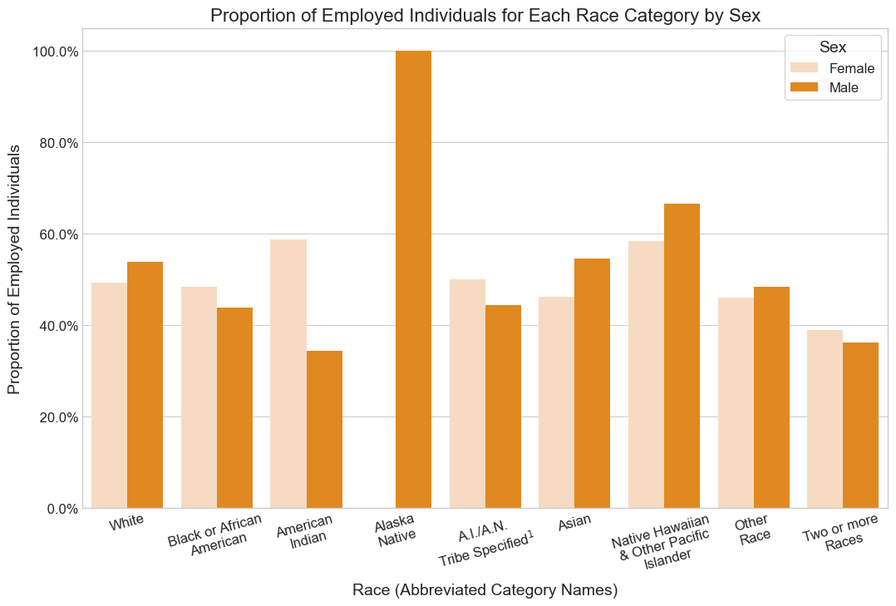
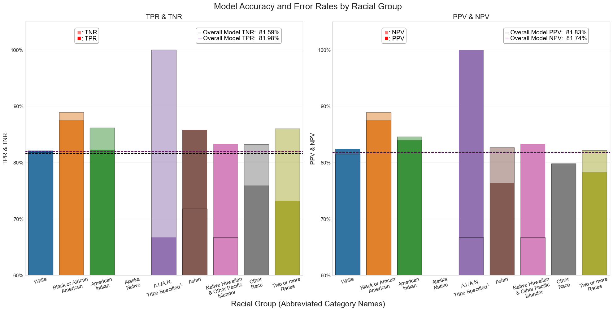
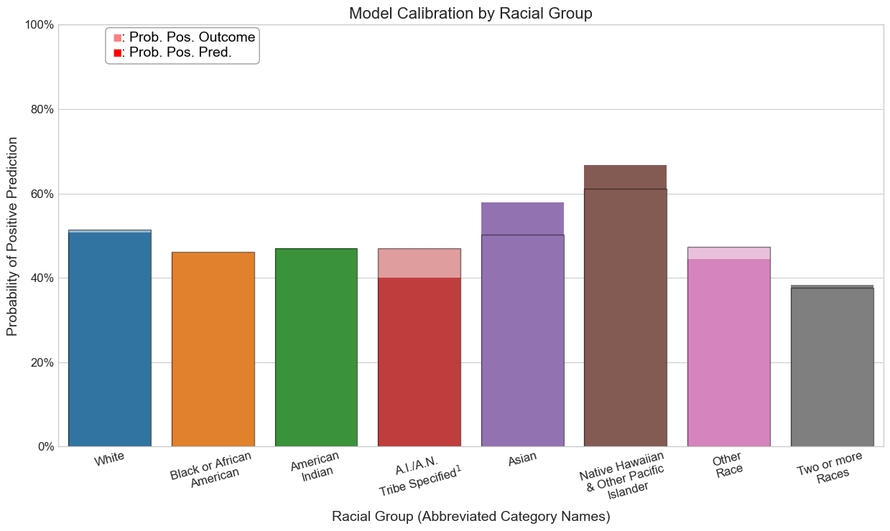

An introductory examination of racial gender bias in a predictive ML model (predicting employment).
Author
Col McDermott
Published
March 12, 2025
Abstract
In this analysis, I explore the construction of a predictive classification model and subsequently examine the model’s properties and behavior to audit for bias. Specifically, the model I constructed aims to predict the employment status of a given individual. Following the refining process, the behavior, accuracy, and error rates of the model are investigated and compared across each racial group outlined in the data. The purpose of this is to uncover any biases on the basis of race the model may be exercising when making predictions for certain individuals. While the model is blind to racial identity during training, this does not eliminate the possibility that systemic racial biases are reflected in the model’s predictive behavior. To audit for potential bias, the model is checked for three primary “fairness” criteria: calibration, error rate balance, and statistical parity. In the search for bias, it is found that the refined model is relatively well-calibrated across each of the racial groups present in the data, but the model generally fails to satisfy the error-balance and statistical parity conditions of accepted “fairness”. Ultimately, the model is shown to exhibit “unfair” (i.e. inconsistent) predictive behavior pertaining to the racial identity of individuals in the data. The results of this introductory study highlight the crucial role of diligently investigating the presence of group-based bias and “unfairness” exercised by classification models even when such models are blind to the group identity. Considering these findings in the context of employment prediction, this study serves as an example of how systemic biases perpetuated through an automated decision classifier can contribute and compound upon past injustices that have discriminantly affected individuals of certain racial identities more than others.
Accessing the Data
Code
# Includuing all additional importsfrom sklearn.model_selection import cross_val_score, train_test_splitfrom folktables import ACSDataSource, BasicProblemfrom sklearn.preprocessing import StandardScalerfrom sklearn.tree import DecisionTreeClassifierfrom sklearn.metrics import confusion_matrixfrom sklearn.pipeline import make_pipelinefrom matplotlib import pyplot as pltfrom sklearn.svm import SVCimport seaborn as snsimport pandas as pdimport numpy as np# Downloading ACS PUMS data for the state of Massachusetts - Code provided by Prof. ChodrowSTATE ="MA"ds = ACSDataSource(survey_year ="2018", horizon ="1-Year", survey ="person")ma = ds.get_data(states = [STATE], download =True)
Including all additional imports
The data for this study comes from an ACS (American Community Survey) data set. Specifically, the data is from a 2018 PUMS (Public Use Microdata Sample) survey for the state of Massachusetts. Each observation from this data set is an individual massachusetts resident who completed the 2018 PUMS survey. The data is downloaded using the ACSDataSource class from the folktables package.
Subsetting Variables - Extracting Relevant Features
Untouched, the data contains nearly 300 different features. However, for this study, I will only be using a subset of the columns:
AGEP: Age (Range 0 - 99)
SCHL: Educational Attainment (Range 1 - 24)
MAR: Marital Status (Range 1 - 5)
RELP: Relationship to Householder (Range 1 - 17)
DIS: Disability Present (Binary)
ESP: Employment Status of Parents (Range 1 - 8)
CIT: Citizenship Status (Range 1 - 5)
MIG: Mobility Status - Lived in Specified Location 1 Year Ago (Range 1 - 3)
MIL: Military Service (Range 1 - 5)
ANC: Ancestry (Range 1 - 4, 8)
NATIVITY: Nativity (Binary)
DEAR: Hearing Difficulty (Binary)
DEYE: Vision Difficulty (Binary)
DREM: Cognitive Difficulty (Binary)
SEX: Sex (Binary)
RAC1P: Race (Range 1 - 9)
ESR: Employment Status (Range 1 - 6)
PINCP: Total Person Income (Integer Range of Income in US Dollars: -19997 - 4209995)
Model 1 - Predicting Employment Status
Data Preparation
Code
# Filtering out employment status (target) and race variablesvars1 = [v for v invarsif v notin ["ESR", "RAC1P"]]# Defining the predictive modeling task - Code provided by Prof. ChodrowEmploymentProblem = BasicProblem( features = vars1, target ="ESR", target_transform =lambda x: x ==1, group ="RAC1P", preprocess =lambda x: x, postprocess =lambda x: np.nan_to_num(x, -1),)features, label, group = EmploymentProblem.df_to_numpy(ma)# Test, train split procedureX_train, X_test, y_train, y_test, group_train, group_test = train_test_split(features, label, group, test_size =0.2, random_state =69)
Code above defines the predictive modeling task and constructs the training data for the employment prediction model.
Before constructing the first predictive model, the predictive modeling task is defined. Afterwards, a test-train-split procedure is conducted on the data to prepare it for model fitting.
General Descriptives
Code
# Observing some general descriptives in the training datatrain = pd.DataFrame(X_train, columns = vars1)train["emp_status"] = y_train.astype(int)train["race"] = group_traintrain.dropna(inplace =True)# Total number of individuals in the training datan = train.shape[0]# Proportion of employed individuals in the training dataemp_prop = train["emp_status"].mean()# Proportion of employed individuals of each racetot_emp = (train["emp_status"] ==1).sum()race_prop_emp_tot = (train.groupby("race")["emp_status"].sum() / tot_emp) *100# Proportion of employed individuals within each racerace_prop_emp = train.groupby("race").aggregate({"emp_status": "mean"})race_prop_emp["u_emp"] =1- race_prop_emp["emp_status"]# Plotting proportion of employed individuals (total)## Creating dataframe for plottingemp_prop_tot = pd.DataFrame({"emp": ['Unemployed', 'Employed'],"prop": [1- emp_prop, emp_prop]})fig, ax = plt.subplots(1, 1, figsize = (12.5, 7.5))plt.style.use("seaborn-v0_8-whitegrid")sns.barplot(emp_prop_tot, x ="prop", y ="emp", hue ="prop", palette = ["#D8BFD8", "#5D3A6D"], legend =False, width =0.6, ax = ax)ax.set_title("Overall Proportion of Employed Individuals", fontsize =16)ax.set_yticks([0, 1])ax.set_yticklabels(["Unemployed", "Employed"], fontsize =12, rotation =60)ax.set_xlim(0.25, 0.55)ax.set_xticks([i /10for i inrange(3, 6)])ax.set_xticklabels([f"{i *10}%"for i inrange(3, 6)], fontsize =12)ax.set_xlabel("Proportion to all Individuals", fontsize =14)ax.set_ylabel("Employment Status", fontsize =14)ax.text((1- emp_prop) +0.01, 0, f"{round((1- emp_prop) *100, 2)}%", ha ="center", va ="center", fontsize =12, color ="black", rotation =60)ax.text(emp_prop +0.01, 1, f"{round( emp_prop *100, 2)}%", ha ="center", va ="center", fontsize =12, color ="black", rotation =60)plt.show()
Code above calculates three proportions of employed individuals in the data: 1. General proportion of employment across all individuals 2. Proportion of each race in all employed individuals 3. Proportion of employed individuals within each race.
Figure 1
Prior to constructing and fitting the predictive model, it’s useful to explore some general descriptives of the data. In total, there are 56104 individuals in the training data. Approximately \(50\%\) of individuals from the data are employed (as of their filling out the survey in 2018).
Code
# Plotting proportion of employed individuals across each racefig, ax = plt.subplots(1, 1, figsize = (12.5, 7.5))sns.barplot(race_prop_emp, x ="race", y ="emp_status", hue ="race", palette = sns.color_palette()[:-1], width =0.9, ax = ax, legend =False)sns.barplot(race_prop_emp, x ="race", y ="u_emp", hue ="race", palette = sns.color_palette()[:-1], width =0.9, ax = ax, legend =False, alpha =0.5, edgecolor ="black")# Adding space between barsfor patch in ax.patches: patch.set_width(patch.get_width() *0.8)ax.set_title("Proportion of Employed/Unemployed Individuals Within Each Race Category", fontsize =16)ax.set_xticks(range(9))ax.set_xticklabels(["White", "Black or African\nAmerican", "American\nIndian", "Alaska\nNative", "A.I./A.N.\nTribe Specified$^1$", "Asian", "Native Hawaiian\n& Other Pacific\nIslander", "Other\nRace", "Two or more\nRaces"], fontsize =12, rotation =15)ax.set_xlabel("Racial Groups", fontsize =14)ax.set_ylabel("Proportion of Employed Individuals", fontsize =14)ax.set_yticks([(0.2* i) for i inrange(6)])ax.set_yticklabels([f"{(0.2* i) *100: .1f}%"for i inrange(6)], fontsize =12)ax.text(1, 0.8, f" : Unemployed\n : Employed", ha ="left", va ="center", fontsize =14, color ="black", bbox =dict(facecolor ="white", alpha =0.75, edgecolor ="gray", boxstyle ="round,pad=0.3"))ax.text(1.075, 0.82, "\u25A0", ha ="center", va ="center", fontsize =16, color ="red", alpha =0.5)ax.text(1.075, 0.78, "\u25A0", ha ="center", va ="center", fontsize =16, color ="red")plt.show()
Code above plots the proportions calculated above
Figure 2
Of the individuals across each racial group:
About \(51.5\%\) of white individuals are employed
About \(46\%\) of black or African American individuals are employed
About \(47\%\) of American Indian individuals are employed
Seemingly all (\(100\%\)) of Alaska Native individuals are employed
\(^1\) About \(47\%\) of individuals identifying as American Indian and Alaska Native tribes specified, or American Indian or Alaska Native, or not specified and of no other races are employed
About \(50\%\) of Asian individuals are employed
About \(61\%\) of Native Hawaiian and Other Pacific Islander individuals are employed
About \(47.3\%\) of individuals identifying as some other race are employed
About \(38\%\) of individuals identifying as two or more races are employed
Code
# Race and Sex intersectionsex_recode = {1.0: "Male", 2.0: "Female"}train["SEX_rc"] = train["SEX"].replace(sex_recode)ixn_data = train.groupby(["race", "SEX_rc"]).agg({"emp_status": "mean"})# Barplot to display the intersection of race and gender in employment statusfig, ax = plt.subplots(1, 1, figsize = (12.5, 7.5))plt.style.use("seaborn-v0_8-whitegrid")sns.barplot(ixn_data, x ="race", y ="emp_status", hue ="SEX_rc", palette = ["#FFDAB9", "darkorange"], ax = ax)ax.set_title("Proportion of Employed Individuals for Each Race Category by Sex", fontsize =16)ax.set_ylabel("Proportion of Employed Individuals", fontsize =14)ax.set_xlabel("Race (Abbreviated Category Names)", fontsize =14)ax.set_xticks(range(0, 9))ax.set_xticklabels(["White", "Black or African\nAmerican", "American\nIndian", "Alaska\nNative", "A.I./A.N.\nTribe Specified$^1$", "Asian", "Native Hawaiian\n& Other Pacific\nIslander", "Other\nRace", "Two or more\nRaces"], fontsize =12, rotation =15)ax.set_yticks([(0.2* i) for i inrange(6)])ax.set_yticklabels([f"{(0.2* i) *100: .1f}%"for i inrange(6)], fontsize =12)ax.legend(frameon =True, fontsize =12, title ="Sex", title_fontsize =14)plt.show()

Code above calculates and plots the proportions of employment within each racial group by sex.
\(^1\)“A.I./A.N.Specified”: Individuals who are American Indian and Alaska Native tribes specified, or American Indian or Alaska Native, or not specified and of no other races.
Figure 3
The figure above displays the possible intersectionality between race and sex among employed individuals. For five of the nine race categories (all but American Indian, Alaska Native, Asian, and Native Hawaiian & Other Pacific Islander) found in this data set, there does not appear to be a significant difference (\(\leq5\%\)) in employment rates between males and females. However, for the remaining racial groups, there does appear to be a noteworthy difference (about \(\geq10\%\)) in employment rates between males and females. Therefore, based on this figure, there generally does not appear to be a significant intersectional effect of race and sex on employment rates across all racial groups, but for some groups, an intersectional effect may be present. Please note that this finding does not dismiss the presence of intersectional biases and systemic injustices that may impact certain individuals from this data set. The existence of such intersectionality may very well be present in the data and but just not captured by this figure. Observing the intersectionality of race and gender relating to employment may be more clearly observed through other statistical processes.
Constructing and Fitting the Model
Code
# Constructing and fitting the modelmodel = make_pipeline(StandardScaler(), DecisionTreeClassifier())model.fit(X_train, y_train)
In a Jupyter environment, please rerun this cell to show the HTML representation or trust the notebook. On GitHub, the HTML representation is unable to render, please try loading this page with nbviewer.org.
# Refining the model## Identifying the optimal max_depth value - Model Complexity parameter for DecisionTreeCLassifier model - though iterative process# #Updated variablesbest_max_depth =Nonebest_avg_score =0for md in np.random.randint(1, 101, size =10): model.set_params(decisiontreeclassifier__max_depth = md) avg_score = cross_val_score(model, X_train, y_train, cv =5).mean()if avg_score > best_avg_score: best_avg_score = avg_score best_max_depth = md# Fitting the model with the optimal max_depth valuedtc_refined = model.set_params(decisiontreeclassifier__max_depth = best_max_depth)dtc_refined.fit(X_train, y_train)gen_score = dtc_refined.score(X_train, y_train)print(f"Refined Model Overall Accuracy: {gen_score *100: .3f}%")
Refined Model Overall Accuracy: 81.475%
Code above uses the make_pipeline method from the sklearn package, the training data is first standardized and then used to fit a DecisionTreeClassifier model (also from sklearn). The max_depth parameter for the model is tuned iteratively with corss-validation to set the tree depth that maximizes overall accuracy while mitigating model over-fitting.
To refine the model, an iterative process tuning the model complexity (using the max_depth parameter) with cross-validation is conducted. This process aims at model maximizing trining accuracy while reducing the presence of model over-fitting. Following this tuning procedure, the model has an overall accuracy of approximately \(83.6\%\) – as an initial metric, this indicates a considerable accurate model.
General Accuracy and Error Rates
Code
# Calculating various accuracy metrics## Overall Test data accuracyacc_t = dtc_refined.score(X_test, y_test)y_preds_t = dtc_refined.predict(X_test).astype(int)acc_t = (y_preds_t == y_test).mean()# Confusion matrix for refined modelC = confusion_matrix(y_test, y_preds_t)emp_status = ["Unemployed", "Employed"]# Creating a heatmap for better confusion matrix visualizationfig, ax = plt.subplots(1, 1, figsize = (5, 5))sns.heatmap(C, annot =True, annot_kws = {"size": 12}, fmt ="d", cmap ="Reds", cbar =False, ax = ax)# Plot stylingax.set_xlabel("Predicted Employment Status", fontsize =14)ax.set_ylabel("True Employment Status", fontsize =14)ax.set_xticklabels(emp_status, fontsize =12)ax.set_yticklabels(emp_status, fontsize =12)ax.set_title("Employment Status Classification Confusion Matrix", fontsize =16)plt.show()# Printing confusion matrix resultsprint(f"There were {C[0, 0]} unemployed individuals that were predicted to be unemployed.")print(f"There were {C[0, 1]} unemployed individuals that were predicted to be employed.")print(f"There were {C[1, 0]} employed individuals that were predicted to be unemployed.")print(f"There were {C[1, 1]} unemployed individuals that were predicted to be employed.")# Calculating various accuracies and error ratesg_fnr = C[1, 0] / (C[1, 0] + C[1, 1])g_tnr = C[0, 0] / (C[0, 0] + C[0, 1])g_fpr =1- g_tnrg_tpr =1- g_fnrg_ppv = C[1, 1] / (C[1, 1] + C[0, 1])g_npv = C[0, 0] / (C[0, 0] + C[1, 0])print(f"Overall Testing Accuracy: {acc_t *100: .3f}%")print(f"General False Negative Rate: {g_fnr *100: .3f}%")print(f"General True Negative Rate: {g_tnr *100: .3f}%")print(f"General False Positive Rate: {g_fpr *100: .3f}%")print(f"General True Positive Rate: {g_tpr *100: .3f}%")print(f"General Positive Predictive Value: {g_ppv *100: .3f}%")print(f"General Negative Predictive Value: {g_npv *100: .3f}%")
There were 5690 unemployed individuals that were predicted to be unemployed.
There were 1284 unemployed individuals that were predicted to be employed.
There were 1271 employed individuals that were predicted to be unemployed.
There were 5782 unemployed individuals that were predicted to be employed.
Overall Testing Accuracy: 81.785%
General False Negative Rate: 18.021%
General True Negative Rate: 81.589%
General False Positive Rate: 18.411%
General True Positive Rate: 81.979%
General Positive Predictive Value: 81.828%
General Negative Predictive Value: 81.741%
Code above constructs the general confusion matrix for the refined model and calculates the typical accuracy/error rates: FPR, FNR, TPR, TNR, PPV, and NPV
Figure 4
Some key overall accuracy and error rates of the refined model are:
Overall Test Accuracy: About \(83\%\)
FNR: About \(13\%\) of truly employed individuals were misclassified as unemployed.
TNR: About \(79\%\) of truly unemployed individuals were correctly classified as unemployed.
FPR: About \(21\%\) of truly unemployed individuals were misclassified as employed.
TPR: About \(87\%\) of truly employed individuals were correctly classified as employed
PPV: About \(81\%\) of “employed” model predictions are correct while only about \(20\%\) are incorrect.
NPV: About \(86\%\) of “unemployed” model predictions are correct while only about \(14\%\) are incorrect.
The general accuracy and error rates outlined above indicate that the refined model is approximately similarly but not equally accurate in predicting that truly unemployed individuals are unemployed versus predicting that truly employed individuals are employed. Additionally, the refined misclassifies truly unemployed individuals and truly employed individuals at similar but notably unequal rates. The refined model yields a PPV and NPV that are close in value (with a difference of \(<7\%\)). This suggests that, for any given individual, the refined model is generally similarly good at predicting if this individual is employed as it is at predicting if this individual is unemployed.
While the overall accuracy of the refined model is appears decently high (\(83\%\)), it is crucial to investigate the same accuracy rates across different groups of observations found in the data. In this context, the prediction task is to identify if an individual is employed or not. In the data, the race of each individual is provided, and not only is race undoubtedly related to employment in the US but race is also a factor by which systemic biases and systematic discrimination occurs in the American workforce. Although the model was not trained using this variable (race), there is no guarantee that the model does not rely on variables highly related to race or that could stand as proxies for race. Thus, it is critically important to examine if the model perpetuates systemic biases and past injustices effecting certain individuals differently on the bases of racial identity.
Auditing the Model for Racial Bias
Examining Model Accuracy and Error Rates Across Each Racial Category
Code above subsets the training data into each race category and creates a table displaying the model’s accuracy and error rates in employment/unemployment predictions for each racial group.
\(^1\)“A.I./A.N.Specified”: Individuals who are American Indian and Alaska Native tribes specified, or American Indian or Alaska Native, or not specified and of no other races.
Table 1
The table above depicts the refined model’s accuracy and error rates for employment prediction of individuals across each racial group in the training data. The general accuracies for each racial group are all largely similar – with values ranging from around \(80\%\) to \(89\%\) accuracy.
The FPR and FNR for each race are slightly less equal across all racial groups (FPR range from roughly \(0\%\) to \(33\%\) and FNR range also from \(0\%\) to \(33\%\)), but these error rates do not differ dramatically.
A similar trend is generally observable for TPR across each racial group (majority TPR range from about \(83\%\) to \(100\%\)) - with the exception of the “American Indian and Alaska Native tribes specified” group with a notably lower TPR: \(67\%\)). As for TNR, there is a larger spread in values across all racial groups with a general TNR range of \(67\%\) to \(100\%\).
Further, the PPV and NPV for each racial group are primarily similar and display a smaller spread of values – with PPV metrics ranging from approximately \(77\%\) to \(100\%\) and NPV values ranging from approximately \(67\%\) to \(100\%\).
Code
# Changing column types for easier visualization## Saving a data frame for late useerb = race_acc.copy()for col in race_acc.columns[1:]:if (race_acc[col].dtype =="object"): race_acc[col] = pd.to_numeric(race_acc[col].str.replace("%", "").replace("NA", np.nan))# Plotting the information described in the table above for easier visualizationfig, ax = plt.subplots(1, 2, figsize = (20, 10))plt.style.use("seaborn-v0_8-whitegrid")# Accuracy by Racesns.barplot(race_acc, x ="Racial Group (Abbr. Cats.)", y ="Model Accuracy", hue ="Racial Group (Abbr. Cats.)", palette = sns.color_palette()[:-1], ax = ax[0])ax[0].axhline(gen_score *100, color ="black", linestyle ="--")ax[0].set_ylim(40, 95)ax[0].set_title("Model Accuracy", fontsize =16)ax[0].set_xlabel("")ax[0].set_ylabel("Model Accuracy", fontsize =14)ax[0].set_xticks(range(9))ax[0].set_xticklabels(["White", "Black or African\nAmerican", "American\nIndian", "Alaska\nNative", "A.I./A.N.\nTribe Specified$^1$", "Asian", "Native Hawaiian\n& Other Pacific\nIslander", "Other\nRace", "Two or more\nRaces"], fontsize =12, rotation =15)ax[0].set_yticks([(10* i) for i inrange(4, 10)])ax[0].set_yticklabels([f"{10* i}%"for i inrange(4, 10)], fontsize =12)ax[0].text(6.15, 92, f"\u2013 Overall Model Accuracy: {gen_score *100: .2f}%", ha ="center", va ="center", fontsize =14, color ="black", bbox =dict(facecolor ="white", alpha =0.75, edgecolor ="gray", boxstyle ="round,pad=0.3"))# FPR & FNR by Racesns.barplot(race_acc, x ="Racial Group (Abbr. Cats.)", y ="FPR", hue ="Racial Group (Abbr. Cats.)", palette = sns.color_palette()[:-1], ax = ax[1])sns.barplot(race_acc, x ="Racial Group (Abbr. Cats.)", y ="FNR", hue ="Racial Group (Abbr. Cats.)", palette = sns.color_palette()[:-1], alpha =0.5, ax = ax[1], edgecolor ="black")ax[1].axhline(g_fpr *100, color ="purple", linestyle ="--")ax[1].axhline(g_fnr *100, color ="black", linestyle ="--")ax[1].set_title("FPR & FNR", fontsize =16)ax[1].set_xlabel("")ax[1].set_ylabel("FPR & FNR", fontsize =14)ax[1].set_xticks(range(9))ax[1].set_xticklabels(["White", "Black or African\nAmerican", "American\nIndian", "Alaska\nNative", "A.I./A.N.\nTribe Specified$^1$", "Asian", "Native Hawaiian\n& Other Pacific\nIslander", "Other\nRace", "Two or more\nRaces"], fontsize =12, rotation =15)ax[1].set_yticks([i for i inrange(0, 35, 5)])ax[1].set_yticklabels([f"{i}%"for i inrange(0, 35, 5)], fontsize =12)ax[1].text(6.5, 29.5, f"\u2013 Overall Model FNR: {g_fnr *100: .2f}%\n", ha ="center", va ="center", fontsize =14, color ="black", bbox =dict(facecolor ="white", alpha =0.75, edgecolor ="gray", boxstyle ="round,pad=0.3"))ax[1].text(6.5, 29, f" Overall Model FPR: {g_fpr *100: .2f}%", ha ="center", va ="center", fontsize =14, color ="black")ax[1].text(5.25, 29, "\u2013", ha ="center", va ="center", fontsize =14, color ="purple")ax[1].text(1.5, 29.5, f" : FNR\n : FPR", ha ="center", va ="center", fontsize =14, color ="black", bbox =dict(facecolor ="white", alpha =0.75, edgecolor ="gray", boxstyle ="round,pad=0.3"))ax[1].text(1.25, 29.9, "\u25A0", ha ="center", va ="center", fontsize =16, color ="red", alpha =0.5)ax[1].text(1.25, 29.2, "\u25A0", ha ="center", va ="center", fontsize =16, color ="red")fig.suptitle("Model Accuracy and FPR/FNR by Racial Group", fontsize =20)fig.text(0.5, 0.005, "Racial Group (Abbreviated Category Names)", ha ="center", va ="center", fontsize =18)plt.tight_layout()
Code above uses the data frame constructed in the previous chunk to plot the overall model accuracy and FPR/FNR by racial group
Figure 5
The plots above provide a visual accompaniment to the information displayed in Table 1. As shown in overall accuracy plot (left), the model’s accuracy for the majority of racial groups is lower than the general accuracy. The largest disparity in general accuracy to the accuracy for a specific racial group is found for individuals identifying as Native Hawaiian & Other Pacific Islander. Regarding FPR anf FNR, the model’s error rates across the racial groups appear to differ considerably both from one another and also from the general FPR and FNR.
Code
fig, ax = plt.subplots(1, 2, figsize = (20, 10))plt.style.use("seaborn-v0_8-whitegrid")# TPR & TNR by Racesns.barplot(race_acc, x ="Racial Group (Abbr. Cats.)", y ="TPR", hue ="Racial Group (Abbr. Cats.)", palette = sns.color_palette()[:-1], ax = ax[0])sns.barplot(race_acc, x ="Racial Group (Abbr. Cats.)", y ="TNR", hue ="Racial Group (Abbr. Cats.)", palette = sns.color_palette()[:-1], alpha =0.5, ax = ax[0], edgecolor ="black")ax[0].axhline(g_tpr *100, color ="purple", linestyle ="--")ax[0].axhline(g_tnr *100, color ="black", linestyle ="--")ax[0].set_ylim(60, 105)ax[0].set_title("TPR & TNR", fontsize =16)ax[0].set_xlabel("")ax[0].set_ylabel("TPR & TNR", fontsize =14)ax[0].set_xticks(range(9))ax[0].set_xticklabels(["White", "Black or African\nAmerican", "American\nIndian", "Alaska\nNative", "A.I./A.N.\nTribe Specified$^1$", "Asian", "Native Hawaiian\n& Other Pacific\nIslander", "Other\nRace", "Two or more\nRaces"], fontsize =12, rotation =15)ax[0].set_yticks(range(0, 110, 10)[6:])ax[0].set_yticklabels([f"{i}%"for i in (range(0, 110, 10)[6:])], fontsize =12)ax[0].text(6.427, 102.5, f"\u2013 Overall Model TNR: {g_tnr *100: .2f}%\n", ha ="center", va ="center", fontsize =14, color ="black", bbox =dict(facecolor ="white", alpha =0.75, edgecolor ="gray", boxstyle ="round,pad=0.3"))ax[0].text(6.427, 102, f" Overall Model TPR: {g_tpr *100: .2f}%", ha ="center", va ="center", fontsize =14, color ="black")ax[0].text(5.17, 102, "\u2013", ha ="center", va ="center", fontsize =14, color ="purple")ax[0].text(1.5, 102.5, f" : TNR\n : TPR", ha ="center", va ="center", fontsize =14, color ="black", bbox =dict(facecolor ="white", alpha =0.75, edgecolor ="gray", boxstyle ="round,pad=0.3"))ax[0].text(1.25, 103.1, "\u25A0", ha ="center", va ="center", fontsize =16, color ="red", alpha =0.5)ax[0].text(1.25, 102.1, "\u25A0", ha ="center", va ="center", fontsize =16, color ="red")# PPV & NPV by Racesns.barplot(race_acc, x ="Racial Group (Abbr. Cats.)", y ="PPV", hue ="Racial Group (Abbr. Cats.)", palette = sns.color_palette()[:-1], ax = ax[1])sns.barplot(race_acc, x ="Racial Group (Abbr. Cats.)", y ="NPV", hue ="Racial Group (Abbr. Cats.)", palette = sns.color_palette()[:-1], alpha =0.5, ax = ax[1], edgecolor ="black")ax[1].axhline(g_npv *100, color ="purple", linestyle ="--")ax[1].axhline(g_ppv *100, color ="black", linestyle ="--")ax[1].set_ylim(60, 105)ax[1].set_title("PPV & NPV", fontsize =16)ax[1].set_xlabel("")ax[1].set_ylabel("PPV & NPV", fontsize =14)ax[1].set_xticks(range(9))ax[1].set_xticklabels(["White", "Black or African\nAmerican", "American\nIndian", "Alaska\nNative", "A.I./A.N.\nTribe Specified$^1$", "Asian", "Native Hawaiian\n& Other Pacific\nIslander", "Other\nRace", "Two or more\nRaces"], fontsize =12, rotation =15)ax[1].set_yticks(range(0, 110, 10)[6:])ax[1].set_yticklabels([f"{i}%"for i in (range(0, 110, 10)[6:])], fontsize =12)ax[1].text(6.427, 102.5, f"\u2013 Overall Model PPV: {g_ppv *100: .2f}%\n", ha ="center", va ="center", fontsize =14, color ="black", bbox =dict(facecolor ="white", alpha =0.75, edgecolor ="gray", boxstyle ="round,pad=0.3"))ax[1].text(6.427, 102, f" Overall Model NPV: {g_npv *100: .2f}%", ha ="center", va ="center", fontsize =14, color ="black")ax[1].text(5.17, 102, "\u2013", ha ="center", va ="center", fontsize =14, color ="purple")ax[1].text(1.5, 102.5, f" : NPV\n : PPV", ha ="center", va ="center", fontsize =14, color ="black", bbox =dict(facecolor ="white", alpha =0.75, edgecolor ="gray", boxstyle ="round,pad=0.3"))ax[1].text(1.25, 103.1, "\u25A0", ha ="center", va ="center", fontsize =16, color ="red", alpha =0.5)ax[1].text(1.25, 102.1, "\u25A0", ha ="center", va ="center", fontsize =16, color ="red")fig.suptitle("Model Accuracy and Error Rates by Racial Group", fontsize =20)fig.text(0.5, 0.005, "Racial Group (Abbreviated Category Names)", ha ="center", va ="center", fontsize =18)plt.tight_layout()

Code above uses the data frame constructed in the previous chunk to plot the and TPR/TNR and PPV/NPV by racial group
Figure 6
The plots above provide additional visual accompaniment for the accuracy rates and predictive values displayed in Table 1. As shown in the plot of TPR/TNR for each racial group, the TPR and TNR tend to deviate notably both from one another and from the model’s general TPR/TNR. For some racial groups though, such as white individuals in the data, the TPR and TNR are very close to the general TPR/TNR. As shown on the right, the the PPV and NPV metrics for each racial group are generally not majorly far from the overall PPV and NPV. However, note that this trend does not extend to all racial groups, such as individuals in the “A.I./A.N. Tribe Specified” or Native Hawaiian & Other Pacific Islander groups, who have a notably lower NPV values than the general NPV.
Based on the information depicted in the Table 1 and the plots from Figure 7 and Figure 8, it is clear that the model’s accuracy and error rates are not entirely consistent across all racial groups. This inconsistency is particularly concerning for individuals identifying as A.I./A.N. Tribe Specified \(^1\), Asian, or Native Hawaiian & Other Pacific Islander. That is, for individuals associating with these racial groups, it appears that the model is not as good at making accurate predictions of employment status as it is for predicting the employment status of other racial groups. This analysis suggests that the model may be perpetuating (through the cost of its misclassifications) systemic biases and past injustices that effect certain individuals differently on the bases of racial identity.
Bias Measures
Calibration:
Code
# Examining the calibration of the model## Calculating the probability that a prediction is positive for each racial groupcalibration = test.groupby("race").aggregate({"pred": "mean"})calibration["pred"] = calibration["pred"] *100calibration["pred_prob_diff"] = np.abs(calibration["pred"] - ((test["pred"]).mean() *100))calibration["emp_status_rate"] = train.groupby("race").aggregate({"emp_status": "mean"}) *100calibration# # Plotting these probabilities for each racial groupfig, ax = plt.subplots(1, 1, figsize = (12.5, 7.5))plt.style.use("seaborn-v0_8-whitegrid")sns.barplot(calibration, x ="race", y ="pred", hue ="race", palette = sns.color_palette()[:-2], ax = ax, legend =False)sns.barplot(calibration, x ="race", y ="emp_status_rate", hue ="race", palette = sns.color_palette()[:-2], ax = ax, legend =False, alpha =0.5, edgecolor ="black")ax.set_title("Model Calibration by Racial Group", fontsize =16)ax.set_xlabel("Racial Group (Abbreviated Category Names)", fontsize =14)ax.set_xticks(range(8))ax.set_xticklabels(["White", "Black or African\nAmerican", "American\nIndian", "A.I./A.N.\nTribe Specified$^1$", "Asian", "Native Hawaiian\n& Other Pacific\nIslander", "Other\nRace", "Two or more\nRaces"], fontsize =12, rotation =15)ax.set_ylabel("Probability of Positive Prediction", fontsize =14)ax.set_yticks([20* i for i inrange(6)])ax.set_yticklabels([f"{20* i}%"for i inrange(6)], fontsize =12)ax.text(0, 95, f" : Prob. Pos. Outcome\n : Prob. Pos. Pred.", ha ="left", va ="center", fontsize =14, color ="black", bbox =dict(facecolor ="white", alpha =0.75, edgecolor ="gray", boxstyle ="round,pad=0.3"))ax.text(0.075, 97, "\u25A0", ha ="center", va ="center", fontsize =16, color ="red", alpha =0.5)ax.text(0.075, 93.5, "\u25A0", ha ="center", va ="center", fontsize =16, color ="red")plt.tight_layout()

Code above calculates the probability of the model predicting an individual to be employed for each racial group and plots these probabilities together.
Figure 7
As shown in the calibration plot above, the model is generally well-calibrated for the majority of racial groups. The model’s predicted probabilities of employment are generally equal to the actual probability of employment irrespective of racial group in that for most groups. However, for some racial groups, such as A.I./A.N.Specified \(^1\) and Asian individuals, the probability of a positive prediction is notably different from the probability of employment for these groups respectively. This suggests that the model is well calibrated for most racial groups (for individuals identifying as white, black or African American, American Indian, Alaska Native, Asian, some other race, or two or more races), but not necessarily well-calibrated across all racial groups.
Error Rate Balance:
Code
# Comparing FPR and TPR across each racial grouperb[["Racial Group (Abbr. Cats.)", "FPR", "TPR"]]
Racial Group (Abbr. Cats.)
FPR
TPR
1
White
18.2 %
82.1 %
2
American Indian
11.1 %
87.5 %
3
Black or African American
13.8 %
82.3 %
4
Alaska Native
NA
NA
5
A.I./A.N. Tribe Specified¹
0.0 %
66.7 %
6
Asian
28.2 %
85.8 %
7
Native Hawaiian and Other Pacific Islander
33.3 %
83.3 %
8
Some Other Race
16.8 %
75.9 %
9
Two or More Races
14.0 %
73.2 %
Table 2
The table above revisits a subset of information presented in Table 1. As depicted in this table, the FPR for the majority of racial groups (white, black or African American, American Indian, Asian, some other race, two or more races) are generally similar values with the largest disparity being \(< 10\%\). The same general property can be observed in TPR across racial groups. However, while for a majority of racial groups, the FPR and TPR appear to be mostly balanced, this is certainly not the case for FPR anf TPR across all racial groups. E.G, the FPR and TPR for for individuals of the A.I./A.N. Tribe Specified \(^1\) group is significantly lower than for all other groups, suggesting that the model correctly predicts A.I./A.N. Tribe Specified \(^1\) as employed with less accuracy than for other groups (the opposite observation can be made for Native Hawaiian & Other Pacific Islander individuals as well). That is, this model does not strictly satisfy true error-rate balance.
Statistical Parity:
Code
# Calculating the absolute difference of the probabilities of a positive prediction for each racial group to assess statistical parityspd = calibration["pred"].max() - calibration["pred"].min()print(f"Statistical Parity (ABS.) Difference: {spd: .2f}%")# Calculating an adjusted SPD (excluding the group with a 100% positive prediction probability)spd_adj = calibration[calibration["pred"] <100]["pred"].max() - calibration[calibration["pred"] <100]["pred"].min()print(f"Adjusted Statistical Parity (ABS.) Difference: {spd_adj: .2f}%")
To assess statistical parity, the absolute difference between the maximum probability of a positive prediction and the minimum probability of a positive prediction across all racial groups is calculated.
Where \(R\) is the set of all racial groups in the data and \(\hat{Y}\) is the model’s predicted employment status. The SPD metric is a measure of the difference in the model’s predictions across racial groups. Only a value of \(0\) indicates that the model’s predictions are consistent across all racial groups. The model’s statistical parity difference for each racial group is roughly \(38\%\). This metric lies well above the accepted ABS. SPD (\(0\)) value associated with true fairness found here, indicating that the model likely exhibits biases in its predictions across racial groups and therefore does not satisfy statistical parity.
Reproducing Figure 5 from Chouldechova
Code
# Defining FPR as linear function of FNR when PPV and P are held constant for white and black or African American individuals in the data## Calculating P for white and black or African American individuals in the datap_w = train[train["race"] ==1.0]["emp_status"].sum() / train[train["race"] ==1.0].shape[0]p_b = train[train["race"] ==2.0]["emp_status"].sum() / train[train["race"] ==2.0].shape[0]# Pulling PPV for white and black or African American individuals from Table 1ppv_min =min((race_acc["PPV"].iloc[0] /100), (race_acc["PPV"].iloc[2] /100))# Storing the relevant information in a data framefpr_by_fnr = pd.DataFrame(columns = ["FNRW", "FPRW", "FNRB", "FPRB"])fpr_by_fnr["FNRB"] = np.linspace(0, 1, 100)fpr_by_fnr["FNRW"] = np.linspace(0, 1, 100)fpr_by_fnr["FPRB"] = (p_b / (1- p_b)) * ((1- ppv_min) / ppv_min) * (1- fpr_by_fnr["FNRB"])fpr_by_fnr["FPRW"] = (p_w / (1- p_w)) * ((1- ppv_min) / ppv_min) * (1- fpr_by_fnr["FNRW"])# # Plotting the FPR as a linear function of FNRfig, ax = plt.subplots(1, 1, figsize = (12.5, 7.5))plt.style.use("seaborn-v0_8-whitegrid")sns.lineplot(fpr_by_fnr, x = fpr_by_fnr["FNRW"], y = fpr_by_fnr["FPRW"], ax = ax, color ="darkorange", label ="White Individuals")sns.lineplot(fpr_by_fnr, x = fpr_by_fnr["FNRB"], y = fpr_by_fnr["FPRB"], ax = ax, color ="darkgrey", label ="Black or African American Individuals")ax.scatter(race_acc["FNR"].iloc[2] /100, race_acc["FPR"].iloc[2] /100, color ="darkgray", s =100)ax.scatter(race_acc["FNR"].iloc[0] /100, race_acc["FPR"].iloc[0] /100, color ="darkorange", s =100)ax.set_title("Feasible (FNR, FPR) Combinations", fontsize =16)ax.set_xlabel("False Negative Rate", fontsize =14)ax.set_ylabel("False Positive Rate", fontsize =14)ax.set_xticks([(.25* i) for i inrange(5)])plt.tight_layout()print(race_acc["FNR"].iloc[0])
17.9
Code above plots FPR as a function of FNR, PPV, and prevalence for individuals identifying as white and those identifying as black or African American.
Figure 8
The plot above is a reproduction of Figure 5 from Chouldechova’s 2017 publication “Fair prediction with disparate impact: A study of bias in recidivism prediction instruments”. For white and black or African American individuals in the data, the plot displays the model’s FPR as a linear function of FNR when the prevalence \(p\) and PPV are held constant. Specifically, the function(s) plotted above are:
Based on this figure, to tune the refined model to yield equal FPR values for white and black or African American individuals, the model’s FNR for white individuals would need to be increased by around 10 percentage points (increasing from what appears to be about \(1\%\) to about \(27\%\)). This indicates that equalizing FPR values for white and black or African American individuals would require a decrease in the model’s accuracy for white individuals.
Discussion
1. Groups this model provide benefits to
There are various different populations in society and the general workforce that could stand to benefit from a predictive system like the one explored in this study. Consider companies and private organizations seeking to grow capital that are concerned with distributing certain services to individuals who are employed and others to those who aren’t. Some examples of these types of companies include insurance companies (aiming to sell insurance plans to customers), real estate renters (aiming to rent properties to individuals who have reasonable means of paying rent), and banks (aiming to receive profit back from loans repaid by borrowers). For each of these organizations, it is highly useful to have an accurate prediction of a prospective customer’s employment status as it will have a large impact (often whether or not to sell something at all) on these companies’ business strategies.
2. Impact of deploying this model
The results of my audit show that this model does not operate in strict alignment with several of the primary criteria of statistical “fairness” on the basis of the racial identity of individuals. Specifically, I found that while this model is moderately calibrated to the enumerated racial groups, it ultimately failed to produce balanced error rates and achieve statistical parity across all racial identities found in the data. With this, this model’s impact on society following mass deployment and usage could likely involve the propagation of systemic biases and reflection of historical injustices falling on people of certain racial identities. That is, the mass use of this “unfair” model is likely to produce discriminatory circumstances in most, if not all, of the applications in which it is used. Whether in commercial, governmental, or public settings, the risk of harm associated with this model may find ways to radiate out into the world.
3. Biases in this model
As touched on above, I feel that the bias audit conducted on this model reveals its exhibition of problematic bias in several ways. As discussed, the bias audit of this model focused on the model’s “fairness” across race. From investigating the disparities found in error rates (FPR and FNR – misclassifications of individuals) and the inconsistencies found in the probabilities of “positive” (i.e. “employed”) predictions, I feel that it is reasonable to assert that the model exercises biases through unequal error rates and its lack of statistical parity. It is important to note, however, that this study only investigates some of the generally accepted metrics of statistical “fairness”. Additionally, the specific audit processes followed could possibly be re-conducted differently to account for other potentially relevant information such as the proportion of each racial group present in the data. All this to say, a further and or more thorough examination of bias in this model may show that some of the findings from this analysis hold different levels of significance.
4. Additional concerns
One of my primary concerns with deploying this model traces back to the training data used to construct and refine the model’s behavior. This model is only trained on data from a single US state. There is no question that certain characteristics from the training data used will be considerably different from analogous data sets from other states or even other countries. For example, the racial makeup of Massachusetts is definitively different from that of New York: If the model was trained using ACS PUMS data from New York, it may very well exhibit different behaviors relating to employment status prediction and race. Additionally, I fear that some of the variable definitions present in the data could be harmful to certain populations of people. For example, the SEX variable is a binary, indicating that all individuals from the data fall into one of two identities for this variable. But, in greater society, many folks do not identify according to this binary encoding. That is, I am concerned with the generalization implied by the design of some of the variables used in this data and how it could have a constructive effect on specific people – This negative effect may manifest further through intersectional biases exhibited by the model. To address these concerns, I would propose that this model be trained on and designed to process many different data sets; including multiple from the data source initially used in addition to data collected from entirely different sources. I recognize that this data set diversification will likely add considerable complexity to the model designing and refining processes. However, I feel that the trade-off in construction simplicity for a more holistic, fair-leaning model is well worth it.
During the implementation process of this replication study, I collaborated with Omar Armbruster.